This is the second part of my Blazor tutorial. We are going to introduce a Web API, to be used by the blazor pages to read/write data.
We will just focus on the Web API for now, and then in Part 3, a client is introduced, so we can make a connection between the Blazor app and the Web API.
The code for the WebAPI can be found in this branch.
Currently, the Todo app contains three components:
It looks something like this:
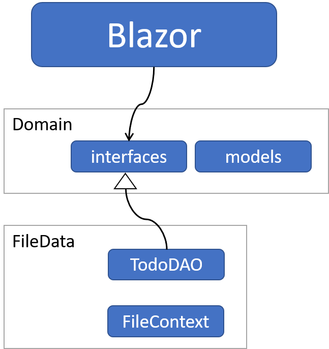
What we want to do, is inject a layer of networking between Blazor and FileData.
At the end of this tutorial, it will look like below (notice, there's still no client, which comes later)
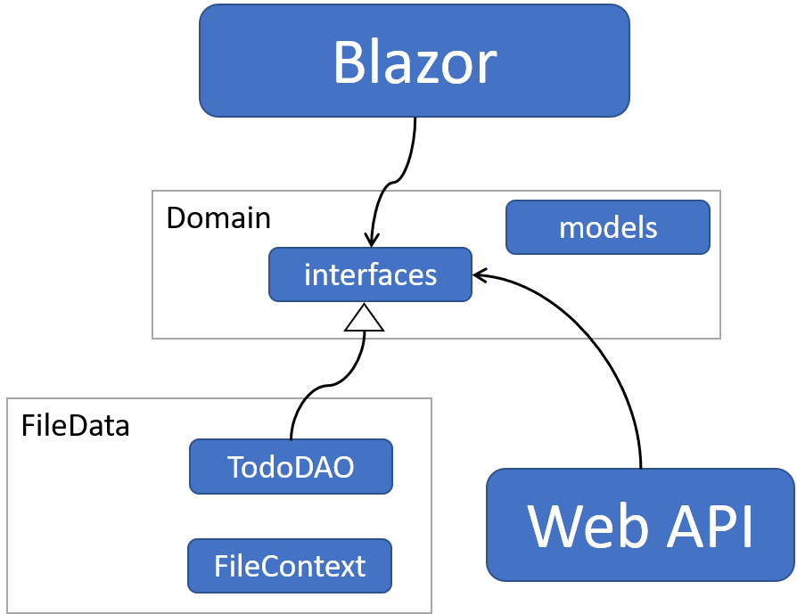
Now, it gets a little confusing, how things fit together, so let's just rearrange the components in a layered structure:
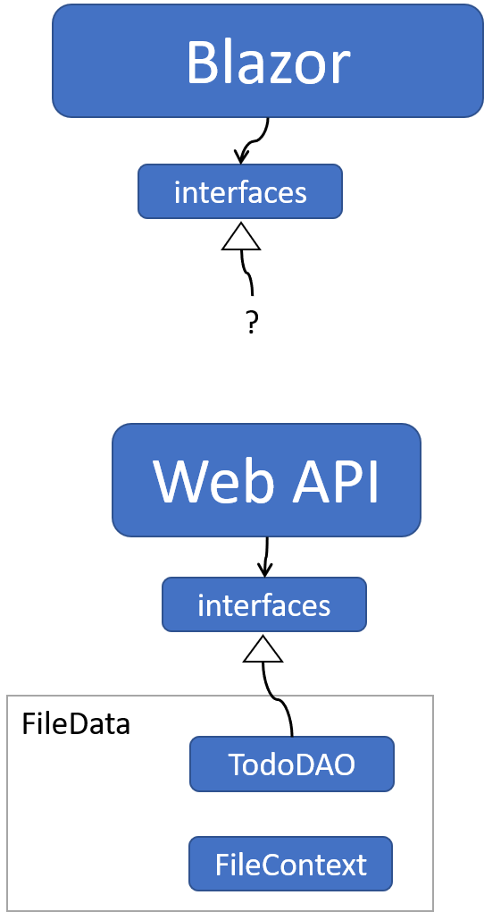
Now, notice, that the two interface layers, are the same interfaces: ITodoHome. It's now, still, used by the Blazor app (and will eventually have a web client implementaiton behind), and it's also used by the Web API, where the implementation behind is the TodoFileDAO class.
There is a "?" to indicate we still don't have the client classes yet, which will contact the Web API for data.
So, let's get to it.
Create a new Web API project:
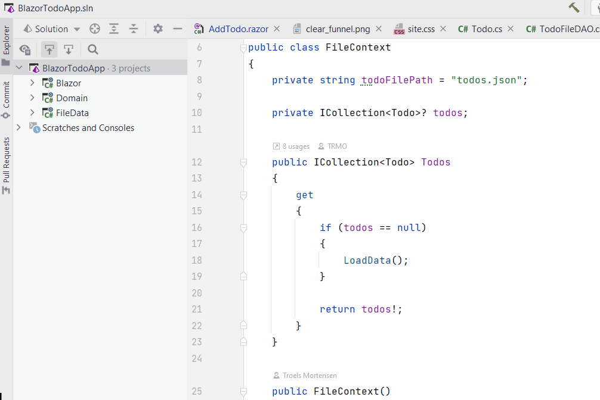
Now, we need to add a dependency to Domain component.
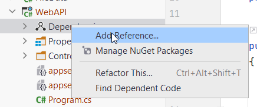
Now you're at it, also add dependency to FileData.
This component needs to access data, through the FileData component. This means we must add as a service an <ITodoHome, TodoFilDAO>.
This service depends on the FileContext, which must also be added.
Do that in the Program.cs of WebAPI:
builder.Services.AddScoped<ITodoHome, TodoFileDAO>();
builder.Services.AddScoped<FileContext>();
You may clean up the project first, be deleting the WeatherforecastController and WeatherForecast classes.
Create a new class, TodosController, in the Controllers directory. (If you expanded your Todo app with users, you'll need a UsersController as well)
Modify the class to look like this:
[ApiController]
[Route("[controller]")]
public class TodosController : ControllerBase
{
}
The attribute [ApiController] marks it as a controller, so it will be picked up by the framework.
Thereby, we can make calls to the endpoints in this class.
The [Route] specifies how to access this specific controller with a REST request.
We inherit from ControllerBase to get access to convenient methods.
First, we will create the method, which can return all Todos. This is used for the view in the Blazor App, which shows a table of all Todos.
Eventually, we will need an Endpoint for all methods in the ITodoHome interface.
First, we need a constructor for TodosController, so that we can inject the data service:
private ITodoHome todoHome;
public TodosController(ITodoHome todoHome)
{
this.todoHome = todoHome;
}
In TodosController create a new method:
[HttpGet]
public async Task<ActionResult<ICollection<Todo>>> GetAll()
{
try
{
ICollection<Todo> todos = await todoHome.GetAsync();
return Ok(todos);
}
catch (Exception e)
{
return StatusCode(500, e.Message);
}
}
We mark the method with [HtppGet] to indicate that if a GET request is made to /todos it must hit this endpoint.
The method is async.
The return type is ActionResult, which returns an http response with an ICollection<Todo>.
The method just uses the todoHome to fetch all todos, and return them. That is done with Ok(..), which will be a status code of 200. This convenience method comes from ControllerBase. There are other similar methods, e.g. BadRequest, or NotFound.
If something were to fail on the server side, we need to provide information of that to the client. Therefore, we have the try-catch. In case of an error, we currently just return an ActionResult with status code 500, to indicate server-error, and the message of the exception. We could add multiple catch clauses, if we wanted to be more specific about which errors returns which result. Different things can go wrong, and you may want to handle that with different approaches. For now, however, this will suffice.
You WebAPI should include Swagger, a tool to test your API.
If you run the project (WebAPI), it should open the Swagger page. You should see this:
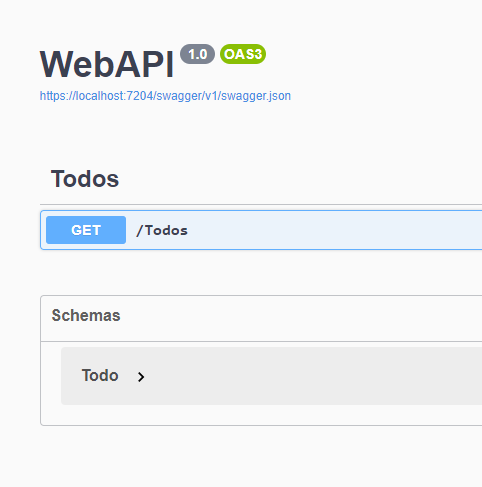
First you get an overview of all the endpoints, you can call. This is automatically generated by Swagger, that's pretty neat.
The Schemas box shows the data to send/receive to/from your endpoints. If you expand it, you can see what kind of data your Todo consists of.
Test your GET endpoint like this:
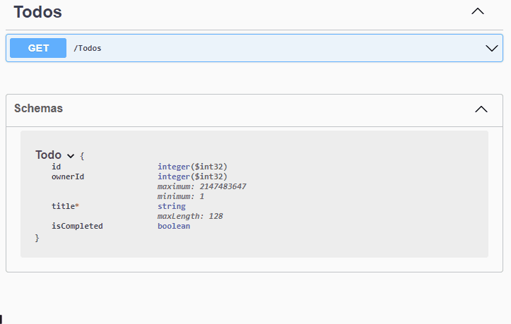
You will be able to see the:
You may have had a bunch of Todo items from the previous tutorial. Now, you will just get the seeded Todos again.
This is because the FileContext is run from WebAPI instead of Blazor project. Therefore, the todos.json file is located in WebAPI instead of Blazor.
Next up, we will create an endpoint, which takes a Todo object, to be stored by the DAO.
The method looks like this:
[HttpPost]
public async Task<ActionResult<Todo>> AddTodo([FromBody] Todo todo)
{
try
{
Todo added = await todoHome.AddAsync(todo);
return Created($"/todos/{added.Id}", added);
}
catch (Exception e)
{
return StatusCode(500, e.Message);
}
}
This time, the method is marked with [HttpPost] to indicate that if a POST request is made to "/todos", it should hit this specific endpoint.
The method is async.
It returns an ActionResult<Todo>. Why return a Todo? Well, the Todo object received is unfinished, there is no ID created yet. This is done by the DAO class.
Sometimes more work may be done by the server, setting other values on the object to be created. The client may be interested in seeing the finished object.
That's why we return the created Todo object. We wrap it in the Created() method, which results in a status code "201: Created". The first argument is the URI to the newly created Todo. We don't have an endpoint to support this yet, but that will come.
The second argument is the created Todo object, added.
Again, we handle exceptions thrown by the TodoDAO, if any. Again, we could have caught specific exceptions, and handled them differently. Maybe return different status codes, or more elaborate error messages, based on the problem. But for now, this will have to suffice.
Again, we want to test this endpoint. This is done by running the WebAPI project, to open the Swagger page.
This time, you have a new endpoint available:
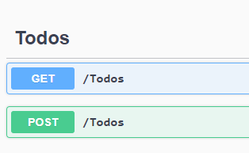
Expand the POST endpoint, click the Try it out button on the right side.
This opens a text-area with a default json Todo object:
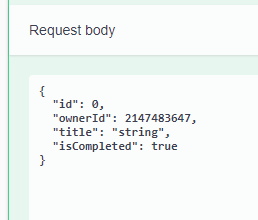
Here, replace text to be (or something else):
{
"ownerId": 2,
"title": "Test endpoint",
"isCompleted": false
}
We don't set the Id of the Todo, as that is the responsibility of the server.
Click the Execute button.
You should get the following response:
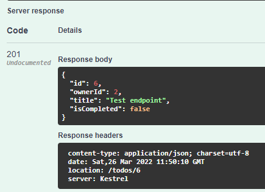
We see the status code is 201. We get the resulting Todo Object, now with id=6, set by the server. We also get a Response Header, containing some meta data about the response data, e.g:
Another test is to now use the GET endpoint, to retrieve all Todos. Among the resulting list of Todos, you should see your new Todo. Give it a go.
You should get a result like this:
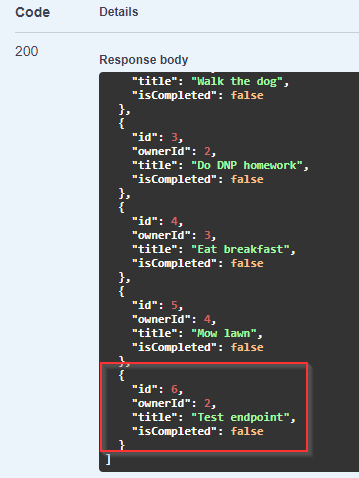
It's now up to you to implement the rest of the endpoints. Below you'll find a list, with a few instructions:
This endpoint must return a specific Todo object, found by its id.
The Id must be provided as a route-parameter. That means a GET request to e.g. "/todos/3" will return Todo item with id=3.
This endpoint will delete a specific Todo item, based on the provided id. It is a DELETE request.
The id must be provided as a route-parameter.
This endpoint must receive a Todo object as an argument. It is a PATCH request.
Remember to test your endpoints. And look up on GitHub if you get stuck.
This concludes this tutorial. The next part will add a Client to the Blazor app, so that Blazor can get data from the WebAPI. Eventually the File-storage will be swapped out for an SQLite database, using Entity Framework Core.
In the page which has an overview of the Todos, in table form, you are probably loading all Todos when the page is opened.
In this small example, that can work, but it does not scale well, if many, many Todos are added to the system.
Create a new GET endpoint for todos (or modify the existing). You should now accept parameters, which can be used to filter the Todos returned to the client.
Filtering may be:
Other things, you invent. You could add a "DateCreated" to the Todo object, and make it queriable by data: Get everything older than/newer than some date.
This endpoint must now accept [FromQuery] arguments in the method signature. You must either create a method for filtering in the DAO class, or do the filtering in the Controller.